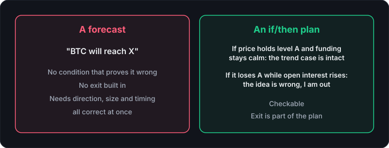

Search for "bitcoin price prediction" and you'll find a wall of confident targets: a number, a date, and a chart with a line pointing somewhere dramatic. CryptoBolt doesn't publish any of them. That's deliberate, and the reasoning is worth spelling out, because it also tells you how to use the tools that do live here, including the AI research panel.
If you landed here looking for a forecast, the honest short answer is that nobody can give you a reliable one. What we can show you is what's happening right now: the live Bitcoin, Ethereum, and Solana pages carry current data and context, not predictions.
Why price is so hard to forecast
Three reasons, none of them exotic.
First, markets price in what's already known. By the time a headline, a funding shift, or a big spot buyer is visible to you, it's visible to everyone, so the useful part is already in the price. What moves price next is mostly the thing nobody had yet: a surprise, a large liquidation, a macro release.
Second, leverage makes moves nonlinear. When positioning gets crowded on one side, a modest price move can turn into a cascade of forced closes. You can often see the crowding. You can't see the trigger. (More on reading that crowding in funding rates explained.)
Third, a forecast has to be right about direction, size, and timing all at once. Being right about direction but a week early still gets a leveraged trader stopped out or liquidated. "Eventually" is not a trading plan.
What AI changes, and what it doesn't
AI is genuinely good at reading a lot of information quickly and telling you where the signals disagree. It is not a source of information the market doesn't already have. A model summarizing technicals and headlines can tell you the daily trend is up while the 4-hour is stalling, that funding is elevated, and that sentiment is stretched. It can't know tomorrow's headline.
So when any AI tool hands you a clean price target, the confident number is the part to be skeptical of, not the part to trust.
What CryptoBolt's AI panel does instead
The panel is built as a small research pipeline rather than a single prompt. It pulls the last 72 hours of news and the Fear & Greed reading alongside the technicals. A first pass reasons over all of it and flags where signals conflict. A second pass produces the structured read plus a trade setup shape: breakout continuation, pullback entry, range fade, or no clean setup, along with how wide the stop should be given current volatility.
Then plain math turns that shape into real entry, stop, and target levels using live support and resistance and ATR(14). The model picks the strategy; ordinary code computes every number, so there's never an invented price level. And "no clean setup" is a perfectly legitimate answer, which is something a forecast never says. The full walkthrough is in how the AI research stays grounded in real data.
Five things worth checking instead of a price target
- Trend across timeframes. Whether the daily, 4-hour, and 1-hour agree tells you more than any single one does.
- Volatility. ATR shows how far price typically moves, which sets sensible stop distances and position sizes. That's the part you actually control.
- Positioning. Funding rate next to open interest shows how crowded one side of the market is.
- Sentiment. The Fear & Greed index is useful as context and unreliable as a trigger (how to read it).
- Levels. Round numbers and order book depth show where reactions are more likely (why round numbers matter).
Think "if/then," not "will"

A forecast says "BTC will reach X." A plan says: if price holds this level and funding stays calm, the trend case is intact; if it loses that level while open interest is rising, the idea is wrong and I'm out.
The second version is checkable, has its exit built in, and doesn't require knowing the future. It's also the version you can practice risk-free in paper trading before it costs anything.
How to sanity-check any prediction you see
Ask four questions. Does it state a time frame? Does it name the level that would prove it wrong? Is there a public record of the source's past calls, including the misses? Is the source selling something that works better if you believe the call? A forecast that can't survive those questions is entertainment, not analysis.
The catch
Context isn't a guarantee either. Everything on your screen can line up and price can still do something else, which is why position size and stops come before conviction. Nothing here is financial advice; it's a way of looking at the market that doesn't depend on pretending to know what comes next.
Where to go next
- How the AI research stays grounded in real data: how the numbers are computed.
- Crypto funding rates explained: reading positioning.
- Reading the Fear & Greed index: sentiment as context.
- Why "$1000 in a day" is a trap: the same skepticism applied to trading headlines.
Ask the AI panel what's actually driving the market right now →